مکان هندسی، مجموعهٔ همهٔ نقطههایی است که یک شرط مشترک را دارند. اگر فاصلهٔ نقطهای از یک مرکز ثابت باشد، مکان هندسی دایره است. اگر نقطه از دو سر یک پارهخط به یک فاصله باشد، روی عمودمنصف آن پارهخط قرار میگیرد. نقاطی که فاصلهٔ ثابتی از یک خط دارند نیز دو خط موازی در دو سوی خط میسازند.
اگر PA=PB باشد، P روی عمودمنصف AB قرار دارد و عکس آن نیز درست است.
عمودمنصفِ AB از وسط AB میگذرد و بر آن عمود است. برای ساختش از دو سر پارهخط، با شعاعی بزرگتر از نصف طول پارهخط کمان میزنیم؛ دو نقطهٔ برخورد کمانها را به هم وصل میکنیم.
درس ۲ ـ نیمساز زاویه
نیمساز، زاویه را به دو زاویهٔ هماندازه تقسیم میکند. ویژگی مهمتر آن برای حل مسئله این است که هر نقطه روی نیمساز داخلی از دو ضلع زاویه فاصلهٔ عمودی برابر دارد. عکس این گزاره هم برقرار است: هر نقطهٔ داخل زاویه که فاصلهٔ برابر از دو ضلع داشته باشد، روی نیمساز داخلی قرار میگیرد.
∠AOZ=∠ZOB و d(P,OA)=d(P,OB)
برای ساخت نیمساز، ابتدا از رأس کمانی میزنیم تا دو ضلع را در دو نقطه قطع کند. سپس از این دو نقطه، با شعاع برابر کمان میزنیم و رأس را به محل برخورد کمانها وصل میکنیم.
درس ۳ ـ ساختهای پایه با پرگار و خطکش
برای رسم عمودمنصف، دهانهٔ پرگار باید از نصف پارهخط بیشتر باشد تا دو کمان در دو نقطه قطع شوند. برای ساخت مثلث از سه ضلع، دو کمان از دو سر ضلع معلوم رسم میکنیم و محل برخوردشان رأس سوم است؛ این کار فقط وقتی ممکن است که مجموع هر دو ضلع از ضلع سوم بزرگتر باشد.
|a-b|<c<a+b
همین شرطِ برخورد کمانها، تعداد جواب ساخت را هم تعیین میکند: دو برخورد یعنی دو جای ممکن برای رأس در دو سوی ضلع؛ تماس یعنی یک جوابِ منحط؛ و نرسیدن کمانها یعنی ساخت ممکن نیست.
درس ۴ ـ رسم عمود و موازی
برای رسم عمود از نقطهای روی خط، دو نقطهٔ همفاصله از آن را روی خط پیدا میکنیم و عمودمنصف پارهخط میان آنها را رسم میکنیم. اگر نقطه بیرون خط باشد، کمانی به مرکز نقطه میزنیم تا خط را در دو نقطه قطع کند؛ عمودمنصف این دو نقطه از نقطهٔ بیرونی میگذرد. برای ساخت موازی میتوان از دو عمود پیاپی استفاده کرد.
l⊥d, d∥m ⇒ l⊥m
در صفحه، از نقطهای بیرون یک خط، تنها یک خط موازی با آن میگذرد. دو خطی که بر یک خط عمود باشند نیز با هم موازیاند.
درس ۵ ـ گزاره، عکس و استدلال
در گزارهٔ شرطی «اگر ...، آنگاه ...»، بخش نخست شرط و بخش دوم نتیجه است. عکس گزاره با جابهجایی شرط و نتیجه ساخته میشود؛ اما درستبودن گزاره لزوماً درستبودن عکس آن را تضمین نمیکند. برای اثبات یک ویژگی، دادهها را به تعریفها و قضیههای شناختهشده وصل میکنیم؛ در ساختهای هندسی، همنهشتی دو مثلث اغلب گام کلیدی است.
P ⇒ Q؛ عکس آن: Q ⇒ P
قبل از استفاده از عکس یک قضیه، درستی آن را بررسی کنید. مثلاً عکس قضیهٔ عمودمنصف درست است، ولی عکس «چهار ضلع برابر دارد، پس مربع است» درست نیست.
تکمیل درسنامه ـ تشابه و قضیهٔ تالس
اگر در مثلث ABC، نقطههای D و E بهترتیب روی AB و AC باشند و DE با BC موازی باشد، دو مثلث ADE و ABC متشابهاند؛ بنابراین ضلعهای متناظر نسبت ثابتی دارند. در ذوزنقه نیز با رسم یک خط موازیِ کمکی، طولهای روی دو ساق و قاعدهها را میتوان به هم مرتبط کرد.
DE∥BC ⇒ AD/AB=AE/AC=DE/BC
پیش از نوشتن نسبتها، ترتیب رأسهای متناظر را مشخص کنید. در تالسِ معکوس، برابری نسبتهای دو ضلع متناظر نشان میدهد پارهخطِ رابط با ضلع سوم موازی است.
تکمیل درسنامه ـ نسبت مساحتها
دو مثلث با ارتفاع مشترک، نسبت مساحتهایشان برابر نسبت قاعدههایشان است. اگر دو شکل مشابه باشند و نسبت طولهای متناظرشان k باشد، نسبت مساحتها k به توان دو خواهد بود. هنگام کمکردن مساحتها، دقت کنید سؤال مساحت ناحیهٔ کوچک یا ناحیهٔ باقیمانده را میخواهد.
S₁/S₂=(k₁/k₂)²؛ SABC/SADE=(AB/AD)²
در مسئلههای زاویهدار، مساحت مثلث را میتوان از نصفِ حاصلضرب دو ضلع در سینوس زاویهٔ میان آنها به دست آورد؛ این روش ارتفاعکشیِ جداگانه را حذف میکند.
تکمیل درسنامه ـ ارتفاع وارد بر وتر
در مثلث قائمالزاویه، اگر از رأس زاویهٔ قائمه بر وتر ارتفاع رسم کنیم، سه مثلث قائمالزاویهٔ حاصل با یکدیگر متشابهاند. از این تشابه، رابطهٔ مربع هر ساق با وتر و تصویر همان ساق، و نیز رابطهٔ مربع ارتفاع با دو پارهٔ وتر به دست میآید.
AB²=BH·BC؛ AC²=CH·BC؛ AH²=BH·CH
وقتی دو قسمت وتر معلوماند، ارتفاع میانگین هندسی آنهاست. اگر وتر و یک ساق معلوم باشند، مربع ساق را بر وتر تقسیم کنید تا تصویر آن ساق روی وتر به دست آید.
تکمیل درسنامه ـ نیمساز و نسبت ضلعها
اگر نیمساز داخلی زاویهٔ A در مثلث ABC، ضلع BC را در D قطع کند، این نیمساز ضلع مقابل را متناسب با دو ضلع مجاور زاویه تقسیم میکند. در مسئلههایی که یکی از زاویهها دو برابر زاویهٔ دیگر است، رسم نیمساز میتواند مثلث را به دو مثلثی تبدیل کند که زاویههای برابر و ضلعهای متناظر روشنتری دارند.
BD/DC=AB/AC
نسبت پارهخطهای روی ضلع مقابل را با نسبت ضلعهای مجاور همان زاویه بنویسید؛ جابهجا نوشتن نسبتها یکی از خطاهای رایج است.
تکمیل درسنامه ـ وتر، شعاع و مماس
عمودِ مرکز دایره بر یک وتر، آن وتر را نصف میکند؛ بنابراین با نصف وتر و شعاع میتوان یک مثلث قائمالزاویه ساخت. شعاعی که به نقطهٔ تماسِ مماس وصل میشود بر مماس عمود است. همچنین دو مماس رسمشده از یک نقطهٔ بیرون دایره طولهای برابر دارند.
OM⊥AB؛ OA⊥PA؛ PA=PB
در محاسبهٔ فاصلهٔ دو وتر موازی، فاصلهٔ هر وتر تا مرکز را با فیثاغورس بیابید؛ اگر وترها در دو سوی مرکز باشند، دو فاصله را جمع کنید.
تکمیل درسنامه ـ دوران و مقطعهای فضایی
با دوران یک مثلث قائمالزاویه حول یکی از ساقها، مخروطی پدید میآید: ساقِ محور، ارتفاع مخروط و ساق دیگر، شعاع قاعده است. در برش کره با صفحه، شعاع مقطع و فاصلهٔ صفحه تا مرکز، با شعاع کره یک مثلث قائم میسازند. مقطعِ موازیِ قاعدهٔ مخروط نیز با مخروط اصلی مشابه است.
V=1/3πr²h؛ r²=R²−d²
در مسئلهٔ مقطع کره، ابتدا فاصلهٔ صفحه از مرکز را از شعاع کره جدا کنید و سپس فیثاغورس را روی مثلث قائمِ حاصل به کار ببرید. در مخروط، نسبت حجم مخروط کوچک به کل، مکعب نسبت طولهای متناظر است.
تکمیل درسنامه ـ بیضی بهصورت مکان هندسی
بیضی مجموعهٔ نقطههایی است که مجموع فاصلهشان از دو کانون ثابت میماند. این مجموع برابر طول محور بزرگ است. در مثلث قائمالزاویهای که نیممحور بزرگ، نیممحور کوچک و فاصلهٔ مرکز تا کانون را دارد، رابطهٔ فیثاغورس برقرار است.
PF₁+PF₂=2a؛ a²=b²+c²؛ e=c/a
برای خروج از مرکز، فاصلهٔ مرکز تا کانون را بر نیممحور بزرگ تقسیم کنید؛ قطرها را مستقیماً در نسبت قرار ندهید.
تکمیل درسنامه ـ مکان هندسی در فضا
در فضا، نقطههایی که از یک نقطهٔ ثابت فاصلهٔ r دارند سطح یک کره را میسازند. برای دو شرط فاصله از دو مرکز، به اشتراک دو کره میرسیم؛ بسته به فاصلهٔ مرکزها و شعاعها، این اشتراک میتواند تهی، یک نقطه یا یک دایره باشد.
|r₁−r₂|<d<r₁+r₂
شرط سختگیرانهٔ بالا به معنی برخورد دو کره روی یک دایره است. برابری با مجموع شعاعها یا تفاضل آنها حالت تماس و یک نقطهٔ مشترک را میدهد.
بانک ۱۸۳ تست
در هر تست، پاسخ، حل تشریحی و راه سریع در بخشهای بازشونده قرار دارد. شکلهای اصلی سؤالهای تصویری نیز کنار صورت سؤال آمدهاند؛ پنج تمرین مرتبط فقط صورت سؤال را نشان میدهند.
تست ۱ · مکان هندسی
مکان هندسیِ نقاطی که از دو سر پارهخط AB فاصلهٔ برابر دارند کدام است؟
۱ ) عمودمنصفِ AB۲ ) خط موازی AB۳ ) دایرهای به قطر AB۴ ) خودِ پارهخط AB
پاسخ نهایی
گزینهٔ ۱ — عمودمنصفِ AB
حل تشریحی
طبق تعریف، هر نقطهای که از A و B فاصلهٔ برابر داشته باشد روی عمودمنصفِ AB قرار میگیرد؛ برعکس، هر نقطه روی این خط نیز از دو سر پارهخط به یک فاصله است.
راه سریع
واژهٔ «فاصلهٔ برابر از دو نقطه» را فوراً به عمودمنصف وصل کنید.
در یک مثلث غیرمنحط، محل برخورد عمودمنصفهای ضلعها چه نقطهای است؟
۱ ) مرکز دایرهٔ محاطی۲ ) مرکز ثقل۳ ) مرکز دایرهٔ محیطی۴ ) نقطهٔ برخورد ارتفاعها
پاسخ نهایی
گزینهٔ ۳ — مرکز دایرهٔ محیطی
حل تشریحی
مرکز دایرهٔ محیطی از هر سه رأس مثلث فاصلهٔ برابر دارد؛ پس روی عمودمنصف هر ضلع قرار میگیرد. به همین دلیل عمودمنصفها در یک نقطه، یعنی مرکز دایرهٔ محیطی، همدیگر را قطع میکنند.
راه سریع
عمودمنصفِ ضلعها را ببینید: محل اجتماعشان مرکز دایرهٔ محیطی است.
دو دایره شعاع ۵ دارند و فاصلهٔ مرکزهایشان ۶ است. این دو دایره چند نقطهٔ مشترک دارند؟
۱ ) هیچ نقطه۲ ) یک نقطه۳ ) دو نقطه۴ ) بیشمار نقطه
پاسخ نهایی
گزینهٔ ۳ — دو نقطه
حل تشریحی
برای دو نقطهٔ مشترک باید فاصلهٔ مرکزها از تفاضل شعاعها بیشتر و از مجموع آنها کمتر باشد. اینجا 0<6<10 برقرار است؛ بنابراین دو دایره در دو نقطه همدیگر را قطع میکنند.
کدام گزاره دربارهٔ نیمساز داخلی یک زاویه درست است؟
۱ ) هر نقطه روی آن از دو ضلع فاصلهٔ برابر دارد۲ ) هر نقطه روی آن از رأس فاصلهٔ برابر دارد۳ ) نیمساز همیشه بر هر دو ضلع عمود است۴ ) نیمساز با یکی از ضلعها موازی است
پاسخ نهایی
گزینهٔ ۱ — هر نقطه روی آن از دو ضلع فاصلهٔ برابر دارد
حل تشریحی
نیمساز داخلی مکان هندسیِ نقاطی است که فاصلهٔ عمودیشان از دو ضلع زاویه برابر است. این گزاره ویژگی اصلی نیمساز را بیان میکند.
راه سریع
در تعریف نیمساز، فاصله از ضلعها برابر است؛ فاصله از رأس مطرح نیست.
پارهخط AB طول ۲۰ دارد. اگر دهانهٔ پرگار دقیقاً ۱۰ باشد و از دو سر پارهخط کمان بزنیم، کمانها چه وضعی دارند؟
۱ ) در دو نقطه قطع میشوند۲ ) فقط در وسط پارهخط مماس میشوند۳ ) اصلاً برخورد نمیکنند۴ ) منطبق میشوند
پاسخ نهایی
گزینهٔ ۲ — فقط در وسط پارهخط مماس میشوند
حل تشریحی
شعاع کمانها نصفِ AB است؛ در این حالت دو دایره در نقطهٔ میانیِ AB به یکدیگر مماساند و فقط یک برخورد دارند. برای پیدا کردن عمودمنصف با دو محل تقاطع، شعاع باید بزرگتر از ۱۰ باشد.
راه سریع
برابریِ شعاع با نصف AB فقط یک برخورد در وسط میدهد.
نقطهٔ T بیرون خط d قرار دارد. برای ساخت عمود از T بر d، ابتدا چه میکنیم؟
۱ ) از T کمانی میزنیم تا d را در A و B قطع کند۲ ) خطی دلخواه موازی d رسم میکنیم۳ ) T را وسط پارهخطی روی d قرار میدهیم۴ ) یک دایره با مرکز روی d رسم میکنیم
پاسخ نهایی
گزینهٔ ۱ — از T کمانی میزنیم تا d را در A و B قطع کند
حل تشریحی
ابتدا کمانی به مرکز T میزنیم تا خط d را در دو نقطهٔ A و B قطع کند. چون TA=TB، نقطهٔ T روی عمودمنصف AB قرار میگیرد؛ این عمودمنصف بر d عمود است.
راه سریع
با دو نقطهٔ همفاصله از T روی d شروع کنید؛ عمودمنصف آنها از T میگذرد.
عکس گزارهٔ «اگر یک چهارضلعی مربع باشد، چهار ضلع برابر دارد» کدام است؟
۱ ) اگر چهار ضلع برابر باشند، چهارضلعی مربع است۲ ) اگر چهارضلعی مربع نباشد، ضلعها برابر نیستند۳ ) اگر چهارضلعی چهار ضلع داشته باشد، مربع است۴ ) اگر زاویهها قائمه باشند، ضلعها برابرند
پاسخ نهایی
گزینهٔ ۱ — اگر چهار ضلع برابر باشند، چهارضلعی مربع است
حل تشریحی
با جابهجایی شرط و نتیجه، عکس بهدست میآید: «اگر چهار ضلع برابر باشند، چهارضلعی مربع است.» این عکس همواره درست نیست؛ لوزیِ غیرمربع نمونهٔ نقض آن است.
راه سریع
عکس را با جابهجایی شرط و نتیجه بسازید؛ درستیاش را جداگانه بسنجید.
در مثلث متساویالاضلاع، کدام خط از هر رأس همزمان میانه، ارتفاع، نیمساز و عمودمنصف ضلع مقابل است؟
۱ ) خطی که رأس را به وسط ضلع مقابل وصل میکند۲ ) هر ضلع مثلث۳ ) نیمساز خارجی۴ ) قطر دایرهٔ محیطی
پاسخ نهایی
گزینهٔ ۱ — خطی که رأس را به وسط ضلع مقابل وصل میکند
حل تشریحی
در مثلث متساویالاضلاع، تقارن نسبت به خطی که رأس را به وسط ضلع مقابل وصل میکند برقرار است. این خط بر ضلع مقابل عمود است و زاویهٔ رأس را نیز نصف میکند.
در یک مثلث غیرمنحط، چند نقطه از هر سه رأس فاصلهٔ برابر دارد؟
۱ ) صفر۲ ) یک۳ ) دو۴ ) بیشمار
پاسخ نهایی
گزینهٔ ۲ — یک
حل تشریحی
نقطهای که از A و B فاصلهٔ برابر دارد روی عمودمنصف AB است؛ شرط فاصلهٔ برابر از A و C نیز عمودمنصف AC را میدهد. این دو خط در یک نقطهٔ یکتا، یعنی مرکز دایرهٔ محیطی، برخورد میکنند.
راه سریع
برخورد دو عمودمنصف، نقطهٔ یکتای همفاصله از سه رأس را میدهد.
مثلث متساویالساقین قائمی بر دایرهای به شعاع √2 محیط شده است. دهانهٔ پرگار برای رسم عمودمنصف یکی از ساقها باید حداقل از کدام مقدار بیشتر باشد؟
۱ ) 2-√2۲ ) 2+√2۳ ) √2-1۴ ) √2+1
پاسخ نهایی
گزینهٔ ۴ — √2+1
حل تشریحی
اگر طول هر ساق را a بگیریم، شعاع دایرهٔ محاطی برابر a(2-√2)/2 است. با قرار دادن r=√2 بهدست میآید a=2+2√2؛ برای رسم عمودمنصف باید شعاع کمان از نصف ساق، یعنی a/2=1+√2، بیشتر باشد.
راه سریع
از رابطهٔ شعاع دایرهٔ محاطی مثلث قائممتساویالساقین استفاده کنید؛ دهانهٔ لازم از نصف ساق بیشتر است.
مثلثهایی با ضلعهای ۴، ۵، x و ۳، ۷، y متشابهاند. اختلاف بیشترین و کمترین مقدار ممکن y چقدر است؟
۱ ) ۶٫۳۵۲ ) ۲٫۸۳ ) ۳٫۱۵۴ ) ۷٫۲
پاسخ نهایی
گزینهٔ ۳ — ۳٫۱۵
حل تشریحی
یکی از ضلعهای ۴ و ۵ باید به ۳ یا ۷ متناظر شود. چهار حالت برای y بهترتیب ۳٫۷۵، ۸٫۷۵، ۲٫۴ و ۵٫۶ میدهند. با ۳ و ۷ تنها ۸٫۷۵ و ۵٫۶ مثلث میسازند (۳٫۷۵ و ۲٫۴ کمتر از ۴ هستند). اختلاف ۳٫۱۵ است.
در مثلث ABC، نقاط M و N روی AB و BC قرار دارند. اگر سه برابر BN برابر چهار برابر NC و مساحت ABC سه برابر BMN باشد، نسبت BM به AM چیست؟
۱ ) ۰٫۸۲ ) ۱٫۲۵۳ ) ۱٫۴۴ ) ۰٫۷۵
پاسخ نهایی
گزینهٔ ۳ — ۱٫۴
حل تشریحی
سهم BN از BC چهار هفتم است. چون زاویهٔ B مشترک است، نسبت مساحتها حاصلضرب سهمهای دو ضلع است. پس سهم BM از BA هفت دوازدهم و سهم AM پنج دوازدهم است؛ نسبت آن دو هفت پنجم است.
در متوازیالاضلاع ABCD، پای عمود A بر BC نقطهٔ F درون BC است. عمود C بر AB، پارهخط AF را در E قطع میکند. اگر AD، BF و AE بهترتیب ۱۴، ۶ و ۸ باشند، AF چند است؟
۱ ) ۱۰۲ ) ۱۲۳ ) ۱۶۴ ) ۱۴
پاسخ نهایی
گزینهٔ ۲ — ۱۲
حل تشریحی
FC برابر ۸ است. دو مثلث قائم ABF و CEF متشابهاند، چون AB و CE، و نیز BF و EF دو به دو عمودند. بنابراین AF/BF=FC/EF. اگر AF=h باشد، h(h−8)=48 و تنها ریشهٔ مثبت ۱۲ است.
در مثلث ABC قائم در B، ساقهای AB و BC برابر ۱۶ و ۱۲ هستند. BH ارتفاع بر وتر و E وسط AH است. عمود E بر AB در D به آن میرسد. DE چند است؟
۱ ) ۲٫۳۶۲ ) ۱٫۹۲۳ ) ۳٫۸۴۴ ) ۲٫۶۴
پاسخ نهایی
گزینهٔ ۳ — ۳٫۸۴
حل تشریحی
وتر ۲۰ است. تصویر AB یعنی AH برابر ۲۵۶ تقسیم بر ۲۰ یا ۱۲٫۸ است. چون ED موازی BC است، نسبت DE به ۱۲ برابر AE به ۲۰ یعنی ۶٫۴ به ۲۰ است؛ پس DE برابر ۳٫۸۴ است.
راه سریع
تصویر AB یعنی AH برابر ۲۵۶ تقسیم بر ۲۰ یا ۱۲٫۸ است.
زاویهٔ A در مثلث ABC دو برابر B است. اگر AC برابر ۵ و BC برابر ۷ باشد، AB چقدر است؟
۱ ) ۴٫۷۵۲ ) ۵٫۲۵۳ ) ۵٫۲۴ ) ۴٫۸
پاسخ نهایی
گزینهٔ ۴ — ۴٫۸
حل تشریحی
نیمساز A را تا D روی BC ادامه بده. چون BAD و ABD برابرند، AD=BD. مثلثهای ACD و BCA متشابهاند، پس AD/AB=AC/BC=5/7. از قضیهٔ نیمساز نیز BD=7AB/(AB+5). این دو بیان برای BD را برابر کن: AB+5=49/5، پس AB=4.8.
در ذوزنقهٔ شکل، قاعدهها ۷ و ۱۲ واحدند. خط موازی قاعدهها از M روی ساق AD میگذرد. اگر MA به MD نسبت ۲ به ۳ داشته باشد، طول MN چند است؟
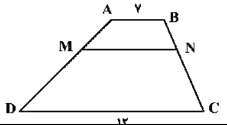
شکل سؤال
۱ ) 8۲ ) 8.75۳ ) 9۴ ) 9.5
پاسخ نهایی
گزینهٔ ۳ — 9
حل تشریحی
از M موازی ساق راست رسم کن. روی قاعدهٔ پایین پارهخطی به طول قاعدهٔ بالا جدا میشود؛ اختلاف دو قاعده ۵ است. طبق تالس، افزایش طول از قاعدهٔ بالا تا MN برابر دوپنجم این اختلاف است؛ پس طول خواسته 7+2=9 است.
امتداد ساقهای ذوزنقهٔ شکل در M به هم میرسد. با توجه به طولهای مشخصشده، محیط مثلث MAB چند است؟
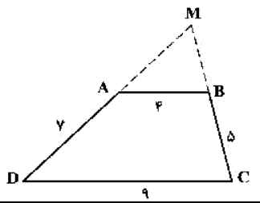
شکل سؤال
۱ ) 13.2۲ ) 13.6۳ ) 14.4۴ ) 14.8
پاسخ نهایی
گزینهٔ ۲ — 13.6
حل تشریحی
مثلث کوچک و بزرگ به دلیل توازی قاعدهها متشابهاند. نسبت بخش بالایی هر ساق به بخش پایینی آن ۴ به (9−4) است. پس دو ساق مثلث کوچک ۵٫۶ و ۴ هستند و محیط آن ۱۳٫۶ است.
راه سریع
مثلث کوچک و بزرگ به دلیل توازی قاعدهها متشابهاند.
در شکل، زاویهٔ AED با ACB برابر است. طول AE که با x نشان داده شده، چند است؟
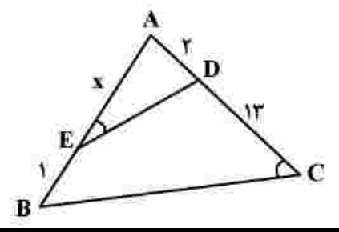
شکل سؤال
۱ ) 7۲ ) 6۳ ) 5۴ ) 4
پاسخ نهایی
گزینهٔ ۳ — 5
حل تشریحی
دو مثلث AED و ACB در رأس A زاویهٔ مشترک دارند و زاویههای E و C برابرند. پس AE/AC=AD/AB. از شکل، AC=15 و AB=x+1. بنابراین x(x+1)=30 و ریشهٔ مثبت ۵ است.
راه سریع
دو مثلث AED و ACB در رأس A زاویهٔ مشترک دارند و زاویههای E و C برابرند.
در مثلث ABC، پارهخط DE با BC موازی است. مساحت مثلث BCE چند برابر مساحت مثلث BDE است؟
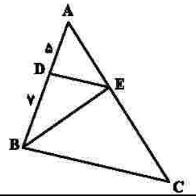
شکل سؤال
۱ ) 1.5۲ ) 1.7۳ ) 2.1۴ ) 2.4
پاسخ نهایی
گزینهٔ ۴ — 2.4
حل تشریحی
ارتفاعهای دو مثلث نسبت به قاعدههای BC و DE هر دو فاصلهٔ بین همین دو خط موازیاند. پس نسبت مساحتها BC/DE است. از تشابه ADE و ABC این نسبت برابر AB/AD یعنی ۱۲ تقسیم بر ۵ یا ۲٫۴ است.
راه سریع
ارتفاعهای دو مثلث نسبت به قاعدههای BC و DE هر دو فاصلهٔ بین همین دو خط موازیاند.
نقاط M و N بهترتیب روی ضلعهای AB و BC مثلث ABC هستند. دو برابر BN با سه برابر NC برابر است و مساحت ABC سه برابر مساحت BMN است. نسبت BM به AM چند است؟
۱ ) 0.75۲ ) 0.8۳ ) 1.25۴ ) 1.4
پاسخ نهایی
گزینهٔ ۳ — 1.25
حل تشریحی
از نسبت دادهشده، BN/BC=3/5. چون زاویهٔ B مشترک است، مساحت BMN نسبت به ABC برابر حاصلضرب BM/BA و BN/BC است. این حاصل یکسوم است؛ پس BM/BA=5/9 و BM/AM=5/4 یعنی ۱٫۲۵.
در مثلث قائمالزاویه، H پای ارتفاع بر وتر است. طول وتر ۲۰ و فاصلهٔ H از نزدیکترین سر وتر ۴ واحد است. نسبت ساق بزرگتر به کوچکتر چند است؟
۱ ) 2۲ ) 3۳ ) √3/2۴ ) √2/3
پاسخ نهایی
گزینهٔ ۱ — 2
حل تشریحی
فاصلهٔ پای ارتفاع تا دو سر وتر بهترتیب ۴ و ۱۶ است. مربع هر ساق برابر وتر ضربدر تصویر آن ساق است. پس نسبت ساق بزرگتر به کوچکتر ریشهٔ نسبت ۱۶ به ۴، یعنی ۲ است.
راه سریع
فاصلهٔ پای ارتفاع تا دو سر وتر بهترتیب ۴ و ۱۶ است.
در متوازیالاضلاع شکل، AD برابر ۱۴، BF برابر ۶ و AE برابر ۸ است. طول ارتفاع AF چند است؟
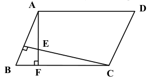
شکل سؤال
۱ ) 16۲ ) 14۳ ) 12۴ ) 10
پاسخ نهایی
گزینهٔ ۳ — 12
حل تشریحی
FC=14−6=8. مثلثهای ABF و CEF قائماند؛ زاویهٔ میان AB و AF با زاویهٔ میان CE و CF برابر است، چون ضلعهایشان دوبهدو عمودند. با گذاشتن AF=x داریم x/6=8/(x−8). پس x(x−8)=48 و ریشهٔ مثبت ۱۲ است.
در مثلث قائم ABC، طول AB ریشهٔ دوم ۳ و طول AC برابر ۲ است. مساحت مثلث HCD چند برابر مساحت مثلث ABD است؟
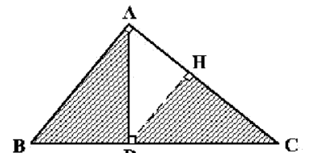
شکل سؤال
۱ ) 3/7۲ ) 4/7۳ ) 16/21۴ ) 8/9
پاسخ نهایی
گزینهٔ ۳ — 16/21
حل تشریحی
وتر اصلی برابر ریشهٔ ۷ است. از قضیهٔ تصویر ساق، DC=4/√7. دو مثلث HCD و ABD با مثلث اصلی متشابهاند؛ پس نسبت مساحتشان مربع نسبت وترهایشان، یعنی (DC/AB)² است. حاصل 16/21 میشود.
در شکل، AD نیمساز زاویهٔ A است و CD با CE برابر است. نسبت مساحت مثلث ABD به مساحت مثلث ACE چند است؟
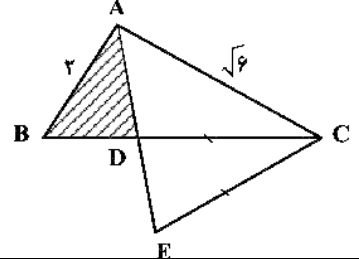
شکل سؤال
۱ ) 1/3۲ ) 2/3۳ ) 3/4۴ ) √3/2
پاسخ نهایی
گزینهٔ ۲ — 2/3
حل تشریحی
AD نیمساز است، پس زاویههای BAD و CAE برابرند. همچنین زاویهٔ ADB با CDE متقابل به رأس و زاویهٔ CDE با CED برابر است، چون CD=CE. پس مثلثهای ABD و ACE متشابهاند؛ نسبت مساحتها مربع AB/AC، یعنی 4/6 یا 2/3 است.
در مثلث ABC، زاویهٔ A دو برابر زاویهٔ B است. اگر AC برابر ۵ و BC برابر ۷ باشد، AB چند است؟
۱ ) 5.2۲ ) 5.25۳ ) 4.75۴ ) 4.8
پاسخ نهایی
گزینهٔ ۴ — 4.8
حل تشریحی
نیمساز A را تا D روی BC رسم کن. مثلث ACD با BCA متشابه است، چون نصف زاویهٔ A برابر B است و C مشترک است. پس CD/5=5/7 و CD=25/7. از اینجا BD=24/7 و طبق قضیهٔ نیمساز AB/5=24/25. جواب ۴٫۸ است.
در مثلث شکل، BD نیمساز است. ارتفاع وارد بر BE در مثلث BDE با BC موازی است. طول AE چند است؟
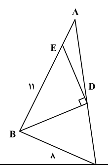
شکل سؤال
۱ ) 6.6۲ ) 5.4۳ ) 3.6۴ ) 2.4
پاسخ نهایی
گزینهٔ ۱ — 6.6
حل تشریحی
چون ارتفاع بر BE با BC موازی است، BC بر AB عمود است. زاویههای دو طرف BD هر کدام ۴۵ درجهاند. مثلث BDE قائم و متساویالساقین است؛ پس فاصلهٔ D از AB (نصف وتر BE) برابر ۵٫۵ است. فاصلهٔ D از BC نیز همین است، چون روی نیمساز است. اگر پای این عمود را F بگیریم، BF=5.5 و FC=2.5. از تشابه DFC و ABC داریم AB/8=5.5/2.5؛ پس AB=17.6 و AE=6.6.
راه سریع
چون ارتفاع بر BE با BC موازی است، BC بر AB عمود است.
در چهارضلعی شکل، موازی AD از B و موازی AB از D در نقطهٔ داخلی M به هم میرسند. زاویهٔ BDC دو برابر BDM است. فاصلهٔ M از وسط BC چند است؟
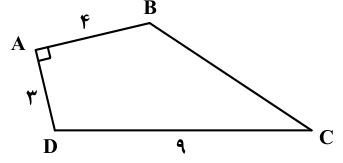
شکل سؤال
۱ ) 1.5۲ ) 2۳ ) 2.5۴ ) 3
پاسخ نهایی
گزینهٔ ۲ — 2
حل تشریحی
چهارضلعی ABMD مستطیل است؛ پس DM=4، BM=3 و DB=5. نقطهٔ B را نسبت به نیمساز DM بازتاب بده و تصویر را X بنام. X روی DC است و DX=5، بنابراین XC=4. چون BM بر DM عمود است، M وسط BX است. در مثلث BXC، فاصلهٔ M از وسط BC نصف XC یعنی ۲ است.
در شکل، BD برابر ۲ و CD برابر ۴ است و زاویهٔ ACD قائمه است. مساحت مثلث ABE چند است؟
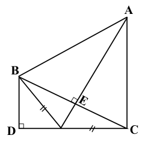
شکل سؤال
۱ ) 10۲ ) 7.5۳ ) 5۴ ) 2.5
پاسخ نهایی
گزینهٔ ۳ — 5
حل تشریحی
نقطهٔ بینام روی DC را F بنام. چون FB=FC و FE بر BC عمود است، E وسط BC است. اگر DF=t باشد، از فیثاغورس 4+t²=(4−t)²، پس t=1.5 و FC=2.5. مثلثهای ACF و CDB متشابهاند (ضلعها دوبهدو عمودند)، پس AC/FC=DC/DB=2 و AC=5. مساحت ABC با قاعدهٔ AC و ارتفاع ۴ برابر ۱۰ است. چون BE نصف BC است، مساحت ABE برابر ۵ است.
نقاط M و N بهترتیب روی AC و BC مثلث ABC هستند. پنج برابر AM با سه برابر CM برابر است. اگر مساحت ABC دو برابر مساحت CMN باشد، نسبت BN به CN چند است؟
۱ ) 0.25۲ ) 0.75۳ ) 0.8۴ ) 0.2
پاسخ نهایی
گزینهٔ ۱ — 0.25
حل تشریحی
در دو مثلث با زاویهٔ مشترک C، نسبت مساحتها حاصلضرب نسبت دو ضلع کنار آن زاویه است. از 5AM=3CM داریم CM/CA=5/8. پس CN/CB=(1/2)÷(5/8)=4/5. بخش باقیمانده یکپنجم BC است؛ بنابراین BN/CN=1/4.
راه سریع
در دو مثلث با زاویهٔ مشترک C، نسبت مساحتها حاصلضرب نسبت دو ضلع کنار آن زاویه است.
در مثلث قائم ABC طول وتر ۲۴ است. پای ارتفاع بر وتر از رأس C نُه واحد فاصله دارد. نسبت ساق بزرگتر به کوچکتر چند است؟
۱ ) √10/3۲ ) √15/3۳ ) √3/2۴ ) √17/2
پاسخ نهایی
گزینهٔ ۲ — √15/3
حل تشریحی
پای ارتفاع را H بگیر. دو تصویر ساق روی وتر ۹ و ۱۵ هستند. مربع هر ساق برابر حاصلضرب وتر در تصویر همان ساق است. در نسبت، وتر حذف میشود؛ نسبت ساق بزرگ به کوچک √(15/9)=√15/3 است.
مثلث ABC در B قائم است، BC برابر ۳ و AB برابر ۴ است. در مثلث ABE، پارهخط DE ارتفاع است. با توجه به شکل، AD چند است؟
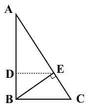
شکل سؤال
۱ ) 2.56۲ ) 2.64۳ ) 3.04۴ ) 3.06
پاسخ نهایی
گزینهٔ ۱ — 2.56
حل تشریحی
وتر مثلث ABC برابر ۵ است. نخست BE را ارتفاع بر AC بگیر: طبق قضیهٔ تصویر، AE=16/5. اکنون در مثلث قائم ABE، ارتفاع ED بر وتر AB فرود آمده است؛ پس AD=AE²/AB=64/25=2.56.
در مربع شکل، ED دو برابر AE است. طول EF چند برابر طول AF است؟
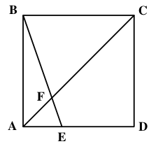
شکل سؤال
۱ ) √5/3۲ ) √5/2۳ ) √10/3۴ ) √10/2
پاسخ نهایی
گزینهٔ ۱ — √5/3
حل تشریحی
AE را یک واحد بگیر؛ ضلع مربع ۳ میشود. به دلیل توازی AE و BC، مثلثهای AEF و CBF متشابهاند؛ پس EF یکچهارم BE و AF یکچهارم AC است. نسبت خواسته برابر BE/AC است. از فیثاغورس BE=√10 و AC=3√2؛ جواب √5/3 است.
در لوزی شکل، E وسط CD است. اگر طول قطر بزرگ سه برابر قطر کوچک باشد، EF چند برابر AB است؟
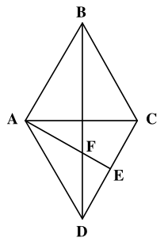
شکل سؤال
۱ ) √5/10۲ ) √5/5۳ ) √10/5۴ ) √10/10
پاسخ نهایی
گزینهٔ ۱ — √5/10
حل تشریحی
مرکز لوزی را O بگیر و نیمقطرها را ۱ و ۳ فرض کن؛ پس AB=√10. در مثلث ACD، دو میانهٔ AE و DO در F قطع میشوند؛ بنابراین EF=AE/3. پای عمود E بر AC وسط OC است (قضیهٔ خط واصل وسطها در مثلث OCD). فاصلهٔ این پا تا A و تا E هر دو ۱٫۵ است. پس AE=1.5√2 و EF/AB=√5/10.
دو مثلث با ضلعهای ۵، ۶، a و ۹، ۴، b متشابهاند. حاصلضرب کمترین و بیشترین مقدار ممکن برای b چند است؟
۱ ) 81۲ ) 36۳ ) 21۴ ) 16
پاسخ نهایی
گزینهٔ ۱ — 81
حل تشریحی
دو ضلع ۵ و ۶ نمیتوانند همزمان با ۴ و ۹ متناظر باشند، چون نسبتها برابر نیستند. اگر ۴ متناظر یکی از ۵ یا ۶ باشد، ضلع متناظر ۹ در مثلث اول دستکم ۱۱٫۲۵ است که از مجموع ۵ و ۶ بیشتر است. پس ۹ متناظر ۵ یا ۶ است. در هر دو حالت نامساوی مثلث برقرار است و دو مقدار b برابر 54/5 و 15/2 میشوند. حاصلضرب ۸۱ است.
راه سریع
دو ضلع ۵ و ۶ نمیتوانند همزمان با ۴ و ۹ متناظر باشند، چون نسبتها برابر نیستند.
در چهارضلعی شکل، از B خطی موازی AD و از D خطی موازی AB رسم میکنیم تا در نقطهٔ داخلی E به هم برسند. اگر زاویهٔ CDE سی درجه و فاصلهٔ E از وسط BC برابر ۱٫۵ باشد، طول DC چند است؟
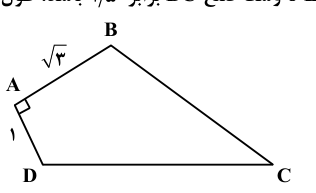
شکل سؤال
۱ ) 3۲ ) 4۳ ) 5۴ ) 6
پاسخ نهایی
گزینهٔ ۳ — 5
حل تشریحی
چهارضلعی ABED مستطیل است؛ پس BD=2 و زاویهٔ BDE برابر ۳۰ درجه است، زیرا در مثلث قائم BDE ضلع BE نصف وتر است. بازتاب B نسبت به DE نقطهای مانند X روی نیمخط DC میدهد. DX=2 و E وسط BX است. در مثلث BXC پارهخط بین E و وسط BC نصف XC است، پس XC=3. چون DX=2، نقطهٔ C نمیتواند بین D و X باشد؛ در نتیجه DC=5.
در شکل، BE برابر ۴، CE برابر ۳ و زاویهٔ ABE قائمه است. مساحت مثلث ACF چند است؟
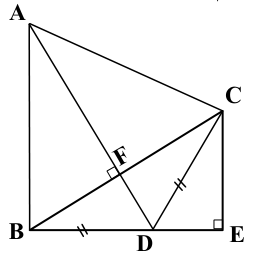
شکل سؤال
۱ ) 25/4۲ ) 25/3۳ ) 25/8۴ ) 25/6
پاسخ نهایی
گزینهٔ ۴ — 25/6
حل تشریحی
اگر BD=x باشد، از مثلث قائم CED داریم x²=(4−x)²+۹ و در نتیجه BD=25/8. وتر BC=5 است. مثلثهای ABD و BEC متشابهاند، چون AD بر BC و AB بر BE عمودند. پس AB=(4/3)BD=25/6. از تشابه ABF با BCE داریم BF=(3/5)AB=5/2 و AF=(4/5)AB=10/3. چون FC=5−BF=5/2، مساحت ACF نصف حاصلضرب FC و AF، یعنی 25/6 است.
راه سریع
اگر BD=x باشد، از مثلث قائم CED داریم x²=(4−x)²+۹ و در نتیجه BD=25/8.
تست ۱۲۱ · تکمیلی · تمرین تکمیلی | از تشخیص شکل تا انتخاب راهحل تألیفی
از نقطهٔ P به دایرهای به مرکز O دو مماس PA و PB رسم شده است. اگر زاویهٔ APB برابر ۶۰ درجه و شعاع دایره ۴ باشد، طول وتر AB چند است؟
۱ ) 4۲ ) 4√2۳ ) 4√3۴ ) 8
پاسخ نهایی
گزینهٔ ۳ — 4√3
حل تشریحی
زاویههای A و B در چهارضلعی OAPB قائمهاند، پس زاویهٔ مرکزی AOB برابر ۱۲۰ درجه است. عمود مرکز بر وتر هم وتر و هم این زاویه را نصف میکند. نصف وتر چهار برابر سینوس ۶۰ درجه، یعنی دو رادیکال سه است.
راه سریع
زاویههای A و B در چهارضلعی OAPB قائمهاند، پس زاویهٔ مرکزی AOB برابر ۱۲۰ درجه است.
تست ۱۲۳ · تکمیلی · تمرین تکمیلی | از تشخیص شکل تا انتخاب راهحل تألیفی
مجموع فاصلههای هر نقطهٔ یک بیضی از دو کانون آن ۲۰ و فاصلهٔ دو کانون از هم ۱۲ است. محیط مثلثی که یک سر قطر کوچک با دو کانون میسازد چند است؟
۱ ) 20۲ ) 24۳ ) 28۴ ) 32
پاسخ نهایی
گزینهٔ ۴ — 32
حل تشریحی
دو ضلع مثلث همان فاصلهها تا کانونها هستند؛ مجموعشان طبق تعریف بیضی ۲۰ است. ضلع سوم فاصلهٔ کانونهاست، نه فاصلهٔ مرکز تا یک کانون. بنابراین محیط برابر ۳۲ است.
تست ۱۲۴ · تکمیلی · تمرین تکمیلی | از تشخیص شکل تا انتخاب راهحل تألیفی
در ذوزنقهای با قاعدههای ۶ و ۱۲، قطرها در O یکدیگر را قطع میکنند. مساحت مثلثی که O با دو سر قاعدهٔ کوچک میسازد ۵ است. مساحت کل ذوزنقه چند است؟
۱ ) 25۲ ) 30۳ ) 40۴ ) 45
پاسخ نهایی
گزینهٔ ۴ — 45
حل تشریحی
دو مثلث روبهروی هم روی قاعدهها به علت توازی متشابهاند. نسبت طولها ۱ به ۲ و نسبت مساحتها ۱ به ۴ است، پس مساحت مثلث روی قاعدهٔ بزرگ ۲۰ است. هر یک از دو مثلث کناری با مثلث کوچک ارتفاع مشترک نسبت به یکی از قطرها دارد و قاعدهاش دو برابر است؛ مساحت هر یک ۱۰ و مجموع چهار مساحت ۴۵ است.
راه سریع
دو مثلث روبهروی هم روی قاعدهها به علت توازی متشابهاند.
بزرگترین ضلع مثلثی با محیط ۱۸ را L مینامیم. دامنهٔ دقیق L چیست؟
۱ ) 6<L<9۲ ) 6≤L≤9۳ ) 0<L<9۴ ) 6≤L<9
پاسخ نهایی
گزینهٔ ۴ — 6≤L<9
حل تشریحی
بزرگترین ضلع از میانگین ۶ کمتر نیست و در مثلث متساویالاضلاع به آن میرسد. باید از مجموع دو ضلع دیگر کوچکتر باشد، پس به ۹ نمیرسد. هر مقدار بین این کرانها با برابر گرفتن دو ضلع دیگر قابل ساخت است.
راه سریع
بزرگترین ضلع از میانگین ۶ کمتر نیست و در مثلث متساویالاضلاع به آن میرسد.
اگر 2a−1 و a+1 و ۷ ضلعهای مثلث باشند، بازهٔ دقیق a چیست؟
۱ ) 2<a<9۲ ) 7/3<a<9۳ ) 7/3<a<7۴ ) 3<a<9
پاسخ نهایی
گزینهٔ ۲ — 7/3<a<9
حل تشریحی
جمع دو ضلع متغیر 3a است و باید از ۷ بیشتر باشد. قدر مطلق تفاضلشان، یعنی |a−2|، باید از ۷ کمتر باشد. اشتراک این شرطها بازهٔ خواسته را میدهد و هر دو طول در این بازه مثبتاند.
تست ۱۴۴ · تکمیلی · تقاطع خط و دایره؛ از شمارش تا مساحت
دو خط موازی ۴ واحد از هم فاصله دارند. دقیقاً سه نقطه روی آنها از E به فاصلهٔ ۵ هستند. مجموع فاصلههای E از دو خط چند است؟
۱ ) ۴۲ ) ۵۳ ) ۶۴ ) ۱۰
پاسخ نهایی
گزینهٔ ۳ — ۶
حل تشریحی
یک خط مماس و دیگری قاطع است. فاصله از اولی ۵ است. E نمیتواند میان دو خط باشد چون عرض نوار ۴ است. فاصله از خط دیگر ۱ است، نه ۹، زیرا باید قاطع باشد. جمع برابر ۶ است.
در مربع MNPQ به ضلع ۶، E داخل مربع است و فاصلهاش از M، از N و از ضلع PQ یکسان است. فاصلهٔ E از PQ چند است؟
۱ ) ۳۲ ) 15/4۳ ) 9/2۴ ) ۵
پاسخ نهایی
گزینهٔ ۲ — 15/4
حل تشریحی
E روی عمودمنصف MN است. اگر فاصلهٔ مشترک r باشد، فاصله تا MN برابر 6−r است. در مثلث قائمِ حاصل از نصف MN، داریم r²=3²+(6−r)². با سادهسازی 12r=45 میشود.
مماسهای دو دایره در یکی از نقاط تقاطعشان بر هم عمودند. اگر شعاع کوچکتر ۱٫۵ و فاصلهٔ مرکزها ۲٫۵ باشد، شعاع بزرگتر چقدر است؟
۱ ) √3۲ ) √5۳ ) ۳۴ ) ۲
پاسخ نهایی
گزینهٔ ۴ — ۲
حل تشریحی
شعاعِ نقطهٔ تماس بر مماس خودش عمود است. پس دو شعاع نیز بر هم عمودند و پارهخط بین مرکزها وتر است. مربع شعاع مجهول برابر ۶٫۲۵ منهای ۲٫۲۵ یعنی ۴ است؛ شعاع ۲ میشود.
در چندضلعی شکل، دو فرورفتگی را به بیرون برمیگردانیم تا محیط و تعداد ضلعها ثابت بمانند. با این روش مساحت چقدر بیشتر میشود؟
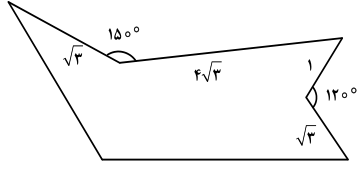
شکل سؤال
۱ ) ۱۵۲ ) ۹۳ ) ۷٫۵۴ ) ۴٫۵
پاسخ نهایی
گزینهٔ ۳ — ۷٫۵
حل تشریحی
هر رأس فرورفته را نسبت به خط بین دو همسایهاش قرینه کن. دو ضلع اندازهٔ خود را حفظ میکنند، اما دو برابر مساحت مثلث فرورفتگی به شکل اضافه میشود. افزایش اول √3 × 4√3 × sin150° = 6 و افزایش دوم 1 × √3 × sin120° = 1.5 است. مجموع برابر ۷٫۵ است.
راه سریع
هر رأس فرورفته را نسبت به خط بین دو همسایهاش قرینه کن.
مثلثهای قائم ABC و BEH در شکل همنهشتاند. اگر AB=4، EH=8 و DF موازی EH باشد، طول BF چند است؟
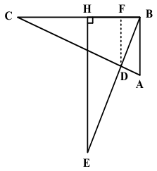
شکل سؤال
۱ ) ۱٫۴۲ ) ۱٫۶۳ ) ۲٫۴۴ ) ۲٫۶
پاسخ نهایی
گزینهٔ ۲ — ۱٫۶
حل تشریحی
از تناظر ضلعها BH=4 و BC=8 است. اگر BF=x باشد، تشابه BFD و BHE میدهد DF=2x. از طرف دیگر CFD و CBA متشابهاند؛ پس DF=(8−x)/2. بنابراین 4x=8−x و x=1.6 است.
در مربع شکل، دو پارهخط به طولهای ۴ و ۱ بر هم عمودند. مساحت مربع چقدر است؟
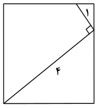
شکل سؤال
۱ ) ۱۳٫۳۱۲ ) ۷٫۲۹۳ ) ۸٫۴۱۴ ) ۱۰٫۲۴
پاسخ نهایی
گزینهٔ ۴ — ۱۰٫۲۴
حل تشریحی
ضلع مربع را s بگیر. دو مثلث قائم پایین و بالا یک جفت زاویهٔ تند برابر دارند، چون ضلعهای این زاویهها دو به دو عمودند. نسبت وترها ۱ به ۴ است. ضلع عمودی مثلث بالا متناظر با ضلع افقی s در پایین است؛ پس طول آن s/4 و ضلع عمودی پایین 3s/4 است. از فیثاغورس در مثلث پایین، s²+(3s/4)²=۱۶ و s²=10.24.
در شکل، G مرکز ثقل مثلث ABC است و GE=EC. نسبت BD به FD کدام است؟
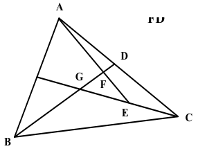
شکل سؤال
۱ ) ۹۲ ) ۸۳ ) ۶۴ ) ۵
پاسخ نهایی
گزینهٔ ۱ — ۹
حل تشریحی
چون BD میانه است، AD=DC. از D موازی AE رسم کن تا CG را در K قطع کند. در مثلث CAE، نقطهٔ K وسط CE است. چون CE=EG، داریم GK=3GE/2. مثلثهای GEF و GKD متشابهاند؛ پس GF/GD=GE/GK=2/3 و FD=GD/3. از خاصیت مرکز ثقل BD=3GD است؛ بنابراین BD/FD=9.
در مثلث ABC، ضلع BC=10 و D وسط آن است. نیمسازهای زاویههای ADC و ADB بهترتیب AC و AB را در E و F قطع میکنند. اگر AF=12√2 و BF=3√2 باشد، DE چند است؟
۱ ) ۳۲ ) ۶۳ ) √7۴ ) 2√7
پاسخ نهایی
گزینهٔ ۲ — ۶
حل تشریحی
در مثلث ADB، قضیهٔ نیمساز میدهد AD/5=AF/BF=4؛ پس AD=20. با AB=15√2، قانون کسینوسها میدهد cos∠ADB=(400+25−450)/200=−1/8. زاویهٔ ADC مکمل آن است؛ پس کسینوس نیمِ ADC برابر √((1+1/8)/2)=3/4 است. مساحت ADC را از جمع مساحت ADE و CDE بنویس: پس از سادهسازی، طول نیمساز برابر 2×20×5×(3/4)/(20+5)=6 است.
در انتقال تمام نقاط به اندازه و در راستا و سوی یکسان جابهجا میشوند؛ هر پارهخط جهتدار با تصویرش همجهت است. دوران یا تجانس با نسبت منفی الزاماً چنین نیست. منظور از جهت در این پرسش، جهت پارهخط است، نه ترتیب ساعتگرد رأسها.
راه سریع
در انتقال تمام نقاط به اندازه و در راستا و سوی یکسان جابهجا میشوند.
در یک مثلث متساویالساقین، اندازهٔ قاعده ۱۶ و اندازهٔ میانهٔ وارد بر آن، نصف قاعده است. اندازهٔ میانهٔ نظیر هر ساق کدام است؟
۱ ) 11√5/2۲ ) 7√10/2۳ ) 6√5۴ ) 4√10
پاسخ نهایی
گزینهٔ ۴ — 4√10
حل تشریحی
میانهٔ وارد بر قاعده ارتفاع نیز هست. پای عمود از وسط ساق بر قاعده، به قضیهٔ خط میانه، وسط نیمقاعده است. از رأس مقابل تا این پا ۱۲ و ارتفاع وسط ساق ۴ است. طول میانه با فیثاغورس √(144+16)=4√10 است.
دو نقطهٔ تقاطع روی AB را به ترتیب P و Q بنام. قضیهٔ وترهای متقاطع در هر دو نقطه حاصلضرب ۶۰ میدهد. پس اگر AP=x و QB=y باشد، x(7+y)=y(7+x) و x=y. از x(x+7)=60 طول مثبت x=5 است؛ بنابراین AB=17.
در شکل زیر، ∠ABC=∠CED=90° است. اگر AD=3، EF=4 و DF=1 باشد، اندازهٔ BC کدام است؟
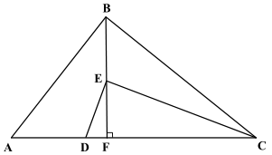
شکل سؤال
۱ ) 4√6۲ ) 10√2۳ ) 6√3۴ ) 8√5
پاسخ نهایی
گزینهٔ ۴ — 8√5
حل تشریحی
در مثلث قائم DEC ارتفاع EF بر وتر وارد شده است؛ پس FC=EF²/DF=16. اکنون AF=4 و AC=20. در مثلث قائم ABC نیز BF ارتفاع است و قضیهٔ تصویر ضلع میدهد BC²=FC×AC=320.
در مربع شکل زیر، نقطهٔ M وسط ضلع AB و ∠BCE=∠AMF است. مساحت مثلث سایهخورده کدام است؟
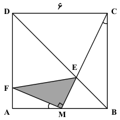
شکل سؤال
۱ ) ۴٫۷۵۲ ) ۴٫۲۵۳ ) ۳٫۷۵۴ ) ۳٫۲۵
پاسخ نهایی
گزینهٔ ۳ — ۳٫۷۵
حل تشریحی
مثلثهای AMF و BCM متشابهاند؛ نسبت وترها MF/CM=AM/BC=1/2. از تشابه BME و DCE (با امتداد ضلع موازی DC و BM) داریم ME/EC=BM/DC=1/2، پس ME=CM/3. چون MF بر CM عمود است، مساحت برابر CM²/12=(6²+3²)/12=3.75 است.
در یک nضلعی، با کم شدن یک ضلع، ۱۶ قطر از تعداد قطرهای آن کم میشود. اگر دو ضلع کم شود، چند قطر از تعداد قطرها کم میشود؟
۱ ) ۳۰۲ ) ۳۱۳ ) ۳۲۴ ) ۳۳
پاسخ نهایی
گزینهٔ ۲ — ۳۱
حل تشریحی
تعداد قطرهای nضلعی برابر n(n−3)/2 است؛ چون از هر رأس به جز خودش و دو همسایهاش میتوان قطر کشید و هر قطر دو بار شمرده میشود. با حذف یک رأس، اختلاف دو مقدار پیاپی n−2 است. اگر اختلاف اول ۱۶ باشد، اختلاف بعدی ۱۵ و مجموع کاهش ۳۱ است.
یک پنجضلعی در یک دایره محاط شده است. هر ضلع این پنجضلعی، وترِ رو به یک زاویهٔ محاطی است. مجموع این زوایای محاطی کدام است؟
۱ ) ۵۴۰°۲ ) ۱۸۰°۳ ) ۷۲۰°۴ ) ۳۶۰°
پاسخ نهایی
گزینهٔ ۲ — ۱۸۰°
حل تشریحی
پنج کمان میان رأسهای پیاپی، یک دور کامل یعنی ۳۶۰ درجه را میسازند. زاویهٔ محاطیِ مقابل هر یک از این کمانها نصف آن کمان است، پس مجموع زاویهها ۱۸۰ درجه است.
راه سریع
پنج کمان میان رأسهای پیاپی، یک دور کامل یعنی ۳۶۰ درجه را میسازند.
در شکل زیر، محیط مثلث محیطی، √(48π) است. اگر مساحت قسمت هاشورخورده برابر ۳ باشد، مساحت مثلث محیطی کدام است؟
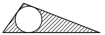
شکل سؤال
۱ ) ۶۲ ) ۶٫۵۳ ) π+3۴ ) ۱٫5π+3
پاسخ نهایی
گزینهٔ ۱ — ۶
حل تشریحی
محیط را P و مساحت را S بگیرید. با وصل کردن مرکز دایره به رأسها، سه مثلث با ارتفاع r به دست میآید؛ پس S=rP/2. در نتیجه مساحت دایره πr²=4πS²/P²=S²/12 است. از S−S²/12=3 نتیجه میشود (S−6)²=۰.
مثلث متساویالساقین قائمالزاویهای بر دایرهای به شعاع √2 محیط شده است. برای رسم عمودمنصف یکی از ساقهای این مثلث، باید دهانهٔ پرگار را حداقل بیشتر از کدام عدد زیر باز کرد؟
۱ ) 2−√2۲ ) 2+√2۳ ) √2−1۴ ) √2+1
پاسخ نهایی
گزینهٔ ۴ — √2+1
حل تشریحی
اگر ساق a باشد، وتر a√2 است. شعاع دایرهٔ محاطی مثلث قائم برابر نصف مجموع ساقها منهای نصف وتر است؛ پس a(2−√2)/2=√2 و a/2=1+√2. دو کمان به مرکز دو سر ساق وقتی در دو نقطه قطع میشوند که دهانه از نصف ساق بیشتر باشد.
در یک لوزی هر ضلع واسطهٔ هندسی دو قطر لوزی است. اندازهٔ زاویهٔ کوچکتر در هر مثلث حاصل از رسم قطرهای این لوزی چند درجه است؟
۱ ) ۱۰۲ ) ۱۵۳ ) ۳۰۴ ) ۴۵
پاسخ نهایی
گزینهٔ ۲ — ۱۵
حل تشریحی
اگر قطرها p و q و ضلع a باشد، a²=pq است. مساحت لوزی را هم به شکل pq/2 و هم به شکل a²sinθ بنویسید؛ θ زاویهٔ تند لوزی است. پس sinθ=1/2 و θ=30 درجه. قطر، این زاویه را نصف میکند؛ در نتیجه زاویهٔ کوچک مثلث ۱۵ درجه است.
در مثلث ABC، میانههای رسمشده از رأسهای B و C بر هم عمودند. اگر طول میانهٔ رسمشده از رأس C برابر ۴٫۵ و مساحت این مثلث برابر ۱۸ باشد، نسبت طول میانههای رسمشده از دو رأس B و C کدام است؟
۱ ) 17/9۲ ) 19/9۳ ) 5/3۴ ) 4/3
پاسخ نهایی
گزینهٔ ۴ — 4/3
حل تشریحی
نقطهٔ برخورد میانهها G است و CG دو سوم ۴٫۵، یعنی ۳ است. سه مثلث حاصل از وصل کردن G به رأسها هممساحتاند (شش مثلث کوچک حاصل از میانهها هممساحتاند). پس مساحت BGC برابر ۶ است. از عمود بودن BG و CG داریم BG×3/2=6، یعنی BG=4. نسبت دو میانه همان BG/CG=4/3 است.
راه سریع
نقطهٔ برخورد میانهها G است و CG دو سوم ۴٫۵، یعنی ۳ است.
در یک مستطیل، خطهایی از دو رأس مقابل بر یک قطر عمود میشوند و آن قطر به سه قسمت طوری تقسیم میشود که قسمت وسط دو برابر هر یک از قسمتهای کناری است. مساحت این مستطیل چند برابر مساحت کوچکترین مثلث ایجادشده در مستطیل است؟
۱ ) ۲۴۲ ) ۱۶۳ ) ۱۲۴ ) ۸
پاسخ نهایی
گزینهٔ ۴ — ۸
حل تشریحی
سه قسمت قطر را t، ۲t و t بگیرید. دو رأس خارج از قطر به دلیل تقارن مرکزی از قطر فاصلهٔ برابری مانند h دارند. مساحت مستطیل دو برابر مساحت نیمهٔ مثلثی آن، یعنی ۴th است. کوچکترین مثلث، قاعدهٔ t روی قطر و ارتفاع h دارد، پس نسبت برابر 4th/(th/2)=8 است.
در نیمدایرهٔ زیر، اگر sinα=0.8 باشد، مقدار BE/EF کدام است؟
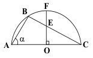
شکل سؤال
۱ ) ۱٫۲۲ ) ۱٫۳۳ ) ۱٫۴۴ ) ۱٫۵
پاسخ نهایی
گزینهٔ ۳ — ۱٫۴
حل تشریحی
نسبت طولها با تغییر مقیاس عوض نمیشود؛ شعاع را ۱ بگیرید. چون AC قطر است، زاویهٔ B قائمه است و BC=2sinα=1.6. مثلثهای CEO و CAB به دلیل زاویهٔ مشترک C و زاویههای قائمه متشابهاند. با cosα=0.6 داریم AB=1.2 و ضریب تشابه CO/CB=1/1.6 است. پس CE=1.25 و OE=0.75؛ در نتیجه BE=0.35 و EF=0.25 و نسبت ۱٫۴ است.